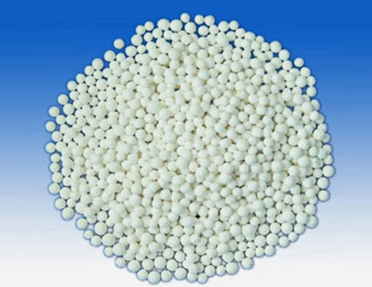

活性氧化铝
来源:巩义市超洁净水材料厂 | 发布时间:2012-5-7 | 浏览次数：111

用于饮用水及工业用装置的除氟、脱砷处理。
物化性质：本品为白色，球状多孔性物质，无毒、无臭、不粉化、不溶于水、乙醇。
分子式：AL2O3、NH2O(0＜n≤0.8)
分子量：102（分子量≤117），含量≥95%以上。
产品技术指标
指标 外观 堆比重 比表面积 孔容积 抗压强度 磨耗率
单位 mm G/cm3 m2/g Cm3/g N/个球 （w/w,%）
AA-102-1 Φ2-3 ≥0.7 ≥300 ≥0.38 ≥80 ≤0.60
AA-102-2 Φ1.2-2.0 ≥0.7 ≥300 ≥0.38 ≥20 ≤0.60
AA-102-3 Φ1.6-2.4 ≥0.7 ≥300 ≥0.38 ≥35 ≤0.60
使用说明：
我公司生产的活性氧化铝（除氟专用）可与家用除氟缸配套使用，是家庭中理想的饮水除氟装置。本除氟滤料也可与自来水厂除氟装置或工业用除氟装置配套使用。家用除氟装置除氟滤料活化：配置硫酸铝溶液（3升水、0.3kg固体硫酸铝），将氧化铝除氟滤料放入上述溶液中，浸泡5-10小时弃去浸液（浸泡时要适当搅拌），而后再用清水洗涤3-5次，每次用水2升左右，或者用调PH法再生，PH值控制在7.5。活性氧化铝除氟滤料可连续使用6-8年，当表面出现黄褐色时候，除氟效果明显降低，此系水中杂质污染所致，因此最好每半年用3%稀盐酸处理一次，其操作方法与再生方法相同。
上一个产品火山岩生物滤料
下一个产品无烟煤滤料